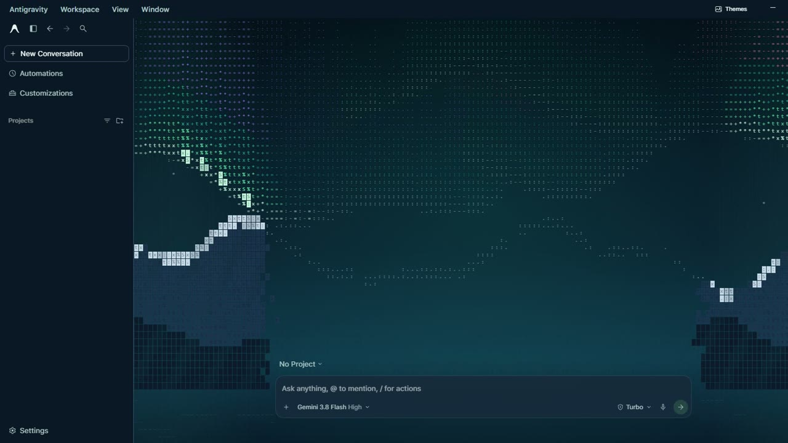
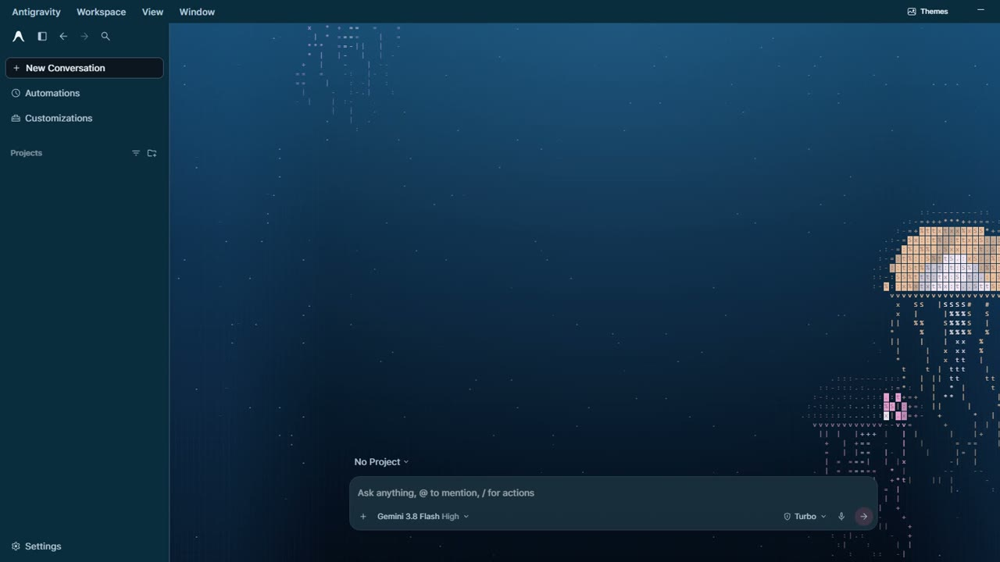
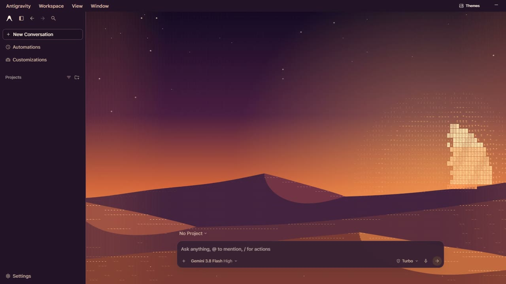
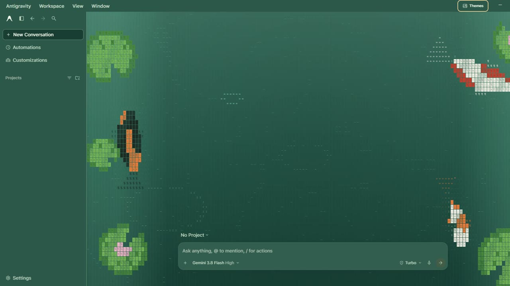
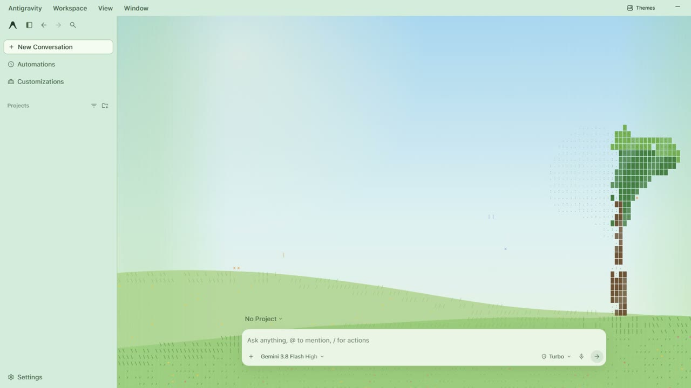
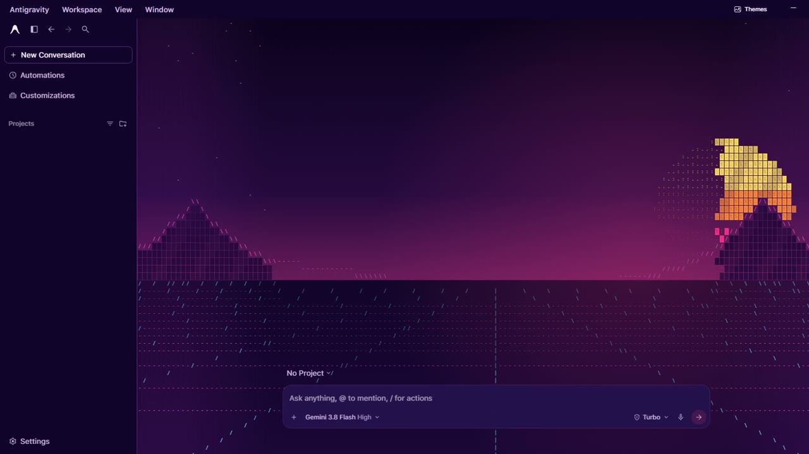

for Antigravity
23 live, animated backgrounds for the Antigravity desktop app, painted entirely in text characters.
Every scene is drawn from letters, dots and symbols, and it moves: koi swim, snow falls, lanterns drift.






Click Themes, press Ctrl Alt W (⌥ ⌘ W on Mac), or type /theme.
The sidebar, menus, composer and title bar are recolored to match each scene.
From Cloud Drift and Sakura to Night Rain and Spiral Galaxy.
Freeze the motion, dial the intensity, or return to stock instantly.
The scene picks up while agents run and ripples outward when one finishes.
The background sits behind your work, and the composer stays fully interactive.
No network requests. Your pick is remembered on your machine.
Windows (macOS support is experimental), Antigravity (2.28.2 hand-verified on Windows), and Node.js 18+.
Download the ZIP and extract it.
Close Antigravity completely.
Open Terminal (macOS) or PowerShell (Windows) in the extracted folder and run:
node manage-wallpapers.cjs install
Reopen Antigravity and click Themes. To uninstall later, close the app and run:
node manage-wallpapers.cjs restore
Unofficial community mod, not affiliated with or endorsed by Google. The installer runs safety checks on your app build before patching, keeps a backup, and refuses any build that fails them. App updates remove the mod; run the install command again afterwards.